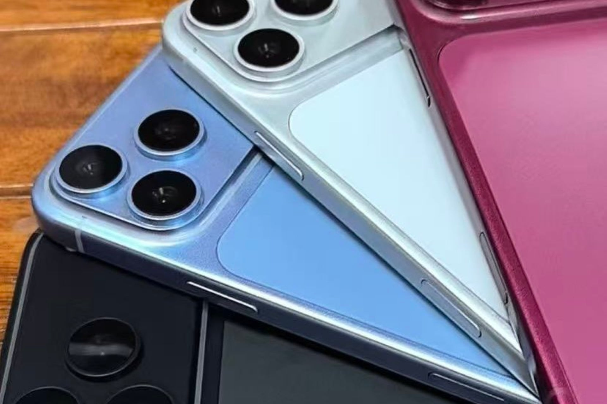

L’iPhone 18 Pro trop cher à fabriquer : Apple devrait rogner sur ses marges pour contenir le prix

🛒 En lien avec cet article
Publicité — Liens de partenariat Amazon : une commission peut être reversée, sans surcoût pour vous.
🔥 Top produits tech du moment
Publicité — Liens de partenariat Amazon : une commission peut être reversée, sans surcoût pour vous.
Les géants de la tech concentrent une part croissante de l'innovation mondiale. Leurs annonces ont un impact direct sur les utilisateurs, les développeurs et l'ensemble du secteur.
Ce qu'il faut retenir
La pénurie de mémoire qui a déjà renchéri les Mac et les iPad arrive aux portes de l'iPhone.
Et cette fois, la facture de fabrication donne le vertige.
Pourquoi c'est important
Cette information conforte la position des grands groupes de la tech dans l'économie mondiale. Elle concerne directement les utilisateurs de technologies numériques et mérite d'être suivie de près dans les prochaines semaines. L’iPhone 18 Pro trop cher à fabriquer : Apple devrait rogner sur ses marges pour contenir le prix est ainsi un signal à prendre en compte pour comprendre les évolutions du secteur.
En résumé
Retenez l'essentiel : L’iPhone 18 Pro trop cher à fabriquer : Apple devrait rogner sur ses marges pour contenir le prix. Cette actualité a été rapportée par 01net. Nous continuerons de suivre ce sujet et de vous tenir informés des prochaines évolutions.
🚀 Vous êtes freelance tech ?
Calculez votre TJM en 30 secondes : micro-entreprise, SASU, EURL ou portage salarial. Gratuit, taux 2025.
Calculer mon TJM →Source : 01net